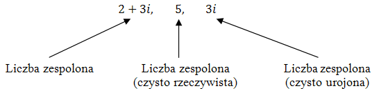

Liczby zespolone są rozszerzeniem liczb rzeczywistych \(\mathbb{R} \). Zbiór liczb
zespolonych oznaczamy symbolem \(\mathbb{C} \) (ang. complex number).
W zbiorze liczb
rzeczywistych nie można wyciągać pierwiastków z liczb ujemnych.
W zbiorze liczb zespolonych można
wyciągać pierwiastki z liczb ujemnych.
Pierwiastek (parzystego stopnia) z liczby ujemnej jest tzw.
liczbą urojoną i zapisujemy go za pomocą jednostki urojonej \(i\). Liczbę \(i\) definiujemy tak:
\[i^2=-1\]
Jeżeli \(x\in \mathbb{R}\), to równanie \(x^2=-1\) nie ma
rozwiązań.
Jeżeli \(x\in \mathbb{C}\), to równanie \(x^2=-1\) ma dwa rozwiązania: \[
x^2=-1\\[6pt] x=i\quad \lor \quad x=-i \]
W zbiorze liczb zespolonych rozwiąż równanie \(x^2=-9\)
\[
x^2=-9\\[6pt] x=3i\quad \lor \quad x=-3i \] ponieważ: \[(3i)^2=9\cdot i^2=9\cdot (-1)=-9\] oraz
\[(-3i)^2=9\cdot i^2=9\cdot (-1)=-9\]
Liczbę zespoloną ogólnie możemy zapisać tak: \[a+bi\] gdzie: \(a,b\in \mathbb{R}
\).
Nazewnictwo: \(a\) - część rzeczywista; \(b\) - część urojona; \(i\) - jednostka urojona
Liczba zespolona może składać się tylko z części rzeczywistej lub tylko z części urojonej. W
szczególności każda liczba rzeczywista jest liczbą zespoloną. 